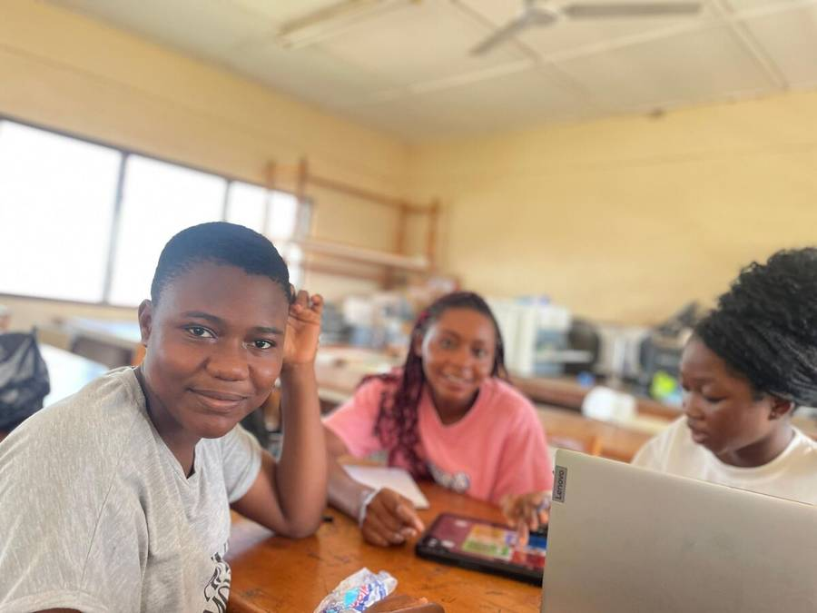
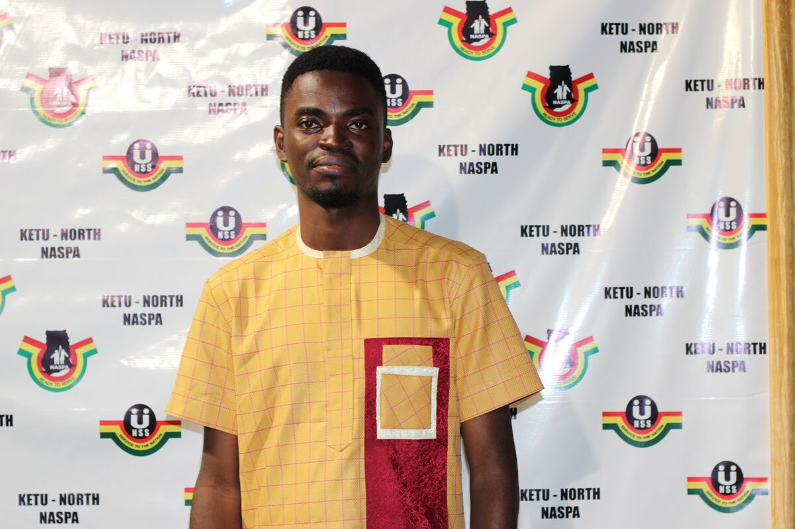
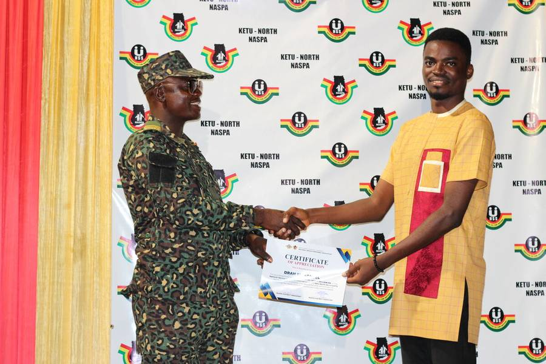
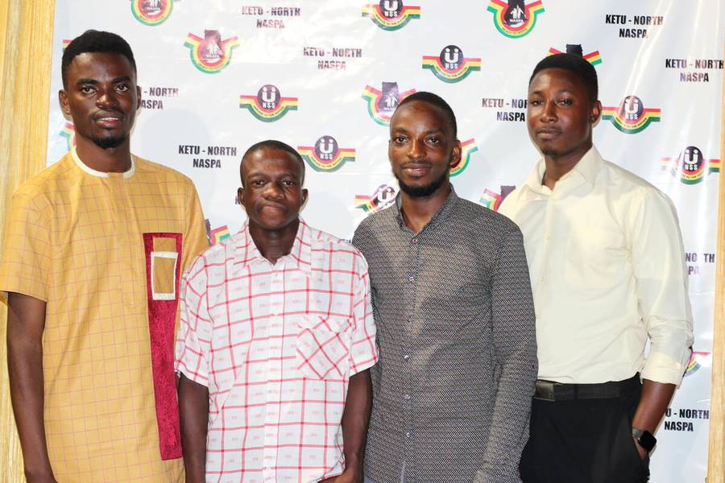

I am the person who stays until the job is done.
I’m Emmanuel — from Ho, Ghana. I believe in showing up, following through, and treating every person with the same patience regardless of who they are. Everything I do carries the name Success Above Dreams — and that name means something to me.

“The most important thing I learned has nothing to do with a classroom. It came from standing at a counter and paying attention to people.”
I work at the reception desk of NS Luxury Villa. That means meeting guests, answering the same questions patiently for the hundredth time, sorting out confusion calmly when someone is frustrated, and making sure every person who walks through the door feels taken seriously. I have been doing it long enough to know that real, patient presence is rarer than people think.
Before this, I served at NHIS Dzodze during national service — helping ordinary people navigate their health insurance records. People came in confused or worried, and it was my job to make things clearer for them. That mattered to me more than the title.
I studied at Ho Technical University, earning my HND in Information and Communication Technology. But the education I am most proud of comes from watching how people actually live and work — and figuring out how to be genuinely useful to them.
The name Success Above Dreams is a personal standard I chose in 2018. Not a brand tagline — a private promise. Do the work. Stay consistent. Be the person you said you would be, even on the days when nobody is watching.
Where I've been
Receptionist · NS Luxury Villa
Every day I meet people from different places, backgrounds, and moods. My job is to make each of them feel at ease — whether they are checking in smoothly or something has gone wrong. I have learned that calm, clear communication is a real skill, and I have had to earn it daily.
National Service · NHIS Dzodze
Health insurance is confusing for a lot of people. My role was to help them with records and answer their questions at the counter. What I remember most is the patience it required — and how much it mattered to the people in front of me when I got it right.
Ho Technical University
I studied HND in Information and Communication Technology. Beyond the technical skills, university pushed me to be self-directed and to take initiative. I showed up. I did the work. I finished.
Success Above Dreams · The name I chose
Not a company registration. A personal decision. I looked at the kind of person I wanted to be and I wrote it down as a commitment: success above the comfort of just dreaming about it. I have carried that with me into every room since.
Moments earned, not given
These awards were not applied for. They came from people around me deciding that the effort they saw was worth acknowledging.



